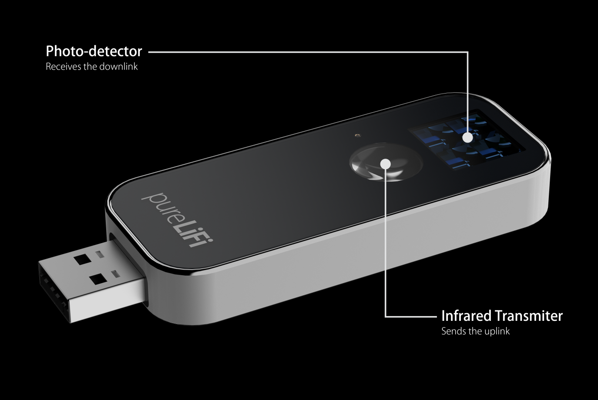

Wie funktionert LiFi eigentlich
Bei LiFi werden Informationen mithilfe von Licht, in diesem Falle durch besondere LEDs und eine Photovoltaikanalage als Empfänger, übermittelt. Hierbei werden von den LEDs Lichtstrahlen im sichtbaren - und Infrarotlichtbereicht ausgesant, welche dann von der Photovoltaikanalage in elektrische Impulse umgewandelt werden.
Die Geschichte von LiFi
- 2011 wurde unteranderem vom Frauenhofer-Institut ein Antrag auf die Erstellung des LiFi Standarts gestellt. 1